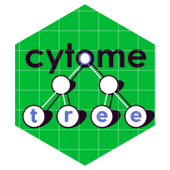

Plot the cell count for each population using CytomeTree.
Source:R/plot_cytopop.R
plot_cytopop.RdPlot the cell count for each population using CytomeTree.
Usage
plot_cytopop(
AnnotObj,
nbpop = 10,
mincount = 1,
maxcount = NULL,
y_axis = c("abs_count", "prop")
)Arguments
- AnnotObj
An object of class Annotation.
- nbpop
Number indicating the maximum of population plotted. Default is
10- mincount
Number indicating the minimum of cell count for the populations. Default is
1.- maxcount
Number indicating the maximum of cell count for the populations. Default is
NULLi.e no maximum selected.- y_axis
a character string either
"abs_count"or"prop"indicating whether the absolute cell count or the relative populations proportions should be plotted. Default is"abs_count".
Examples
# Run CytomeTree
data(DLBCL)
cellevents <- DLBCL[,c("FL1", "FL2", "FL4")]
Tree <- CytomeTree(cellevents, minleaf = 1, t=.1)
#>
|
| | 0%
|
|======================= | 33%
|
|=============================================== | 67%
|
|======================================================================| 100%
Annot <- Annotation(Tree,plot=FALSE)
# Plot the cell count
plot_cytopop(Annot)